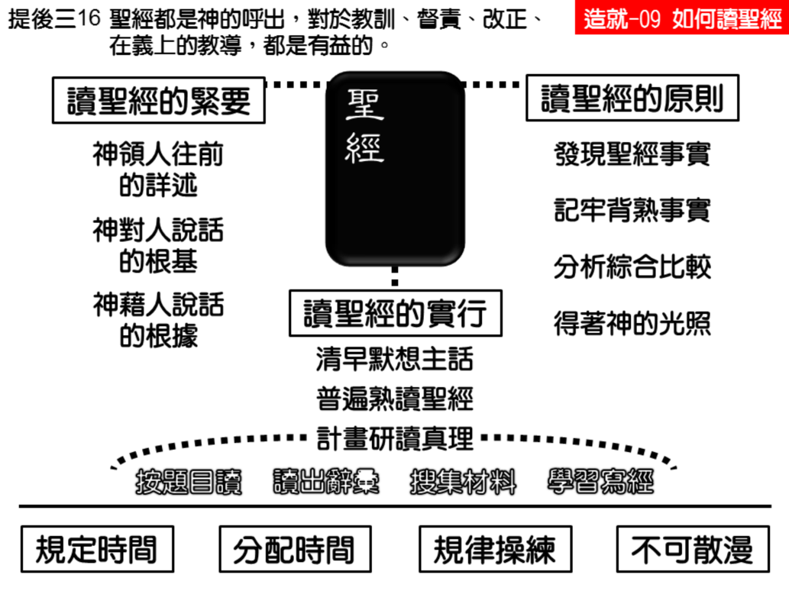

诗歌：586 首、588 首
重要经文：
提摩太后书三章十五节下至十七节：这圣经能使你借着相信基督耶稣，有得救的智慧。圣经都是神的呼出，对于教训、督责、改正、在义上的教导，都是有益的， 叫属神的人得以完备，为着各样的善工，装备齐全。
诗篇一百一十九篇一四七至一四八节：我趁天未亮呼求；我仰望了你的言语。我趁夜更未换，将眼睁开，为要默想你的话语。
纲目要点：
壹 读圣经的紧要：
一 要知道神为我们豫备的是多丰富、多广阔。
二 要知道神如何一步一步的带领人。
三 神现今对人说话的根基，都是根据于祂已经说的话。
贰 读圣经有四个基本的原则：
一 把圣经里的事实寻找出来。
二 把这些事实记牢、背熟，不能漏掉，不能含糊。
三 在神面前能将这些事实分析、综合和比较。
四 神的光照。
叁 读圣经的实行方法：
一 第一段时间的默想圣经。
二 第二段时间的普读圣经。
三 时间分配实行的研究圣经。
1 第一节20 分钟－按题目读。
2 第二节20 分钟－读出词汇。
3 第三节10 分钟－搜集材料。
4 第四节10 分钟－学习写经。
信息选读：
读圣经的紧要
圣经都是神所默示的，于教训、督责、使人归正、教人学义、都是有益的。它给我们看见，神在已往的时候为我们作了多少事，也给我们看见，神在已往的时候曾如何带领了人。我们要知道神为我们豫备的是多丰富、多广阔，我们就非读圣经不可；我们要知道神如何一步一步的带领人，我们也非读圣经不可。
神现今对人说话的根基，都是根据于祂已经说的话
神难得对一个人说祂圣经里所没有说的话。即使一个人属灵的路走了相当远，神有时会给他启示的话，那话也仍是神在圣经里已经说过的话。所以，神现今说话，乃是将自己的话再说就是。人如果不知道神已经说的话，就不容易得着神的启示，因为他缺少给神说话的条件。圣经是一本厉害的书，也是一本大的书。我们一生之中，即使把所有的时间都花在它里面，也不过能摸着它的一部分而已。一个人如果想不花工夫就明白圣经，那是不可能的事。
读圣经的基本原则
读圣经的时候，总要按这四个次序，不能从第三跳到第一，也不能从第一跳到第三。第一，是你把圣经里的事实寻找出来。第二，你就把这些事实记牢、背熟。你得看清楚神的话是怎样说的，然后要记住它，不能漏掉，不能含糊，否则就没有用处。第三，要把这些事实分析、综合和比较。当你在神面前能将这些事实分析得好、综合得好、比较得好的时候，你就有机会可以得着。第四，神的光照。圣经中包含了许多的属灵的事实。人里面眼睛瞎的时候，就读不出那些事实。如果能在圣经里读出事实来，那就已经得着一半以上的光了。因为神的光照，是光照祂话语里的事实。发现事实，是读经一半的工作。我们读圣经，一定要把事实搜寻出来。一个会读圣经的人，在神面前总是一个仔细的人，不是粗枝大叶的人，不是搀杂的人。
圣经是一点一画都不能更改的
神的话这样说，就是这样。神的话一说出来，你就该知道神着重的点是在哪里。有许多马虎的人，听人的话听不准，读神的话也读不准；神的话着重在哪里，他们读不出来，那一个窍在哪里，读不出来。这是读圣经的方法，这是读圣经的路。是先发现事实，然后把事实记牢，然后分析、比较或者综合，然后在神面前等候、祷告，主就要光照你，叫你看见。这是读圣经的四个原则，缺一个都不行。事实的发现越多，就越丰富。如果不能发现事实，只是囫囵吞枣的读，结果就不知道是什么。
读圣经的实行方法
我们现在要来说明，在这前后两段的时间里如何读圣经。
一 第一段时间的默想圣经。慕勒说，当我这样默想神的话的时候，我的心就能与主有经历上的交通。所以，我就每天清早默想新约。当我用几句话求主祝福祂宝贵的话语之后，我所最先作的，就是默想神的话，在每一节圣经中寻求，要从它里面得着祝福；并非为着在公众面前的讲道，也不是为要传讲我所默想的话语，乃是要使我自己的灵魂得着粮食。我所遇见的不改变的结果，就是几分钟之后，我就要认罪，或者感谢，或者代祷，或者恳求。
二 第二段时间的普读圣经。信主不久的人，至少在六个月之内，不适宜进行研究式的读经，因为他对于圣经的全文还不熟识。必须先花几个月的时间，普遍的熟读圣经全文，以后才能研究圣经。熟读圣经的时候，要一章一章、一遍一遍的，在神面前继续的读。最好定规一天旧约读多少章，新约读多少章。当你第一次读完一遍新约的时候，最好能写一封信通知比较年长的弟兄。在你的圣经里，也最好能把第一面空白的衬页留出来，为着记载你读圣经的遍数。
三 分时实行的研究圣经。经过了六个月以上，对于圣经稍微有了知识之后，就可以开始研究圣经。你如果一天能抽出一小时来，你就替自己定规一个一天研究一小时的计划；依此类推，总是照着你一天所能抽出的时间，替你自己定规一个适当的计划。最不好的就是“天才”式的读圣经，只是随便的读，无计画计划的读，翻到哪里读到哪里，有时能连读十天，有时则十天之内一字不读，那是要不得的。现在我们姑且以每天研究一小时圣经为例，试把时间分配一下：
1 第一节二十分钟－专一的读一个着重一点的题目，像“豫言”、“豫表”。
2 第二节二十分钟－读词。圣经中有许多特别的词，例如：和好、血、信、喜乐、平安、盼望、爱、顺服、义、救赎、怜悯等等，散在圣经各处，都是很有意思的。如果能把它们搜罗集中在一起，就更能知道那些词的意义。
3 第三节十分钟－搜集材料。圣经中有许多题目，例如：创造、人、罪、救恩、悔改、圣灵、重生、成圣、称义、赦免、释放、基督的身体、主的再来、审判、国度、永世等等。可以挑选几个，按着这些题目到圣经中去搜集材料。
4 第四节十分钟－写经是我们对于一段圣经有一个新的领会，用使人容易明白的话，写得使人一看就懂。写经若写不来，解经也不能解。写经的时候所要注意的，就是不要维持圣经本来的字句，而是要用你自己的字句。这一个工作的主要学习，是要用你所领会的话语来说原来的意思。
上面有这四个题议：先按着题目读，再读辞，再搜集材料，并学习写经。这样规定时间和分配时间来读圣经，乃是对于自己的操练。我们腰间要束上带，要有约束，要在神面前有规律，不散漫。你如果规定读一小时，就盼望你守住这一小时。除非身体有病，或者放假、休息的时候，可以缩短或延长之外，平常总得维持一个固定的时间。天天继续的作，不久就有收成。 （摘自初信造就第九篇）
课程复习：
一 请说明读圣经的紧要为何？
二 读圣经要守住哪四个基本的原则？
三 为什么最不好的就是“天才”式的读圣经？
四 在您与主的祷告中，告诉主何时把全本圣经读完第一遍?
五 根据读圣经的实行，告诉您的属灵同伴并宣告：每天读经的进度。
